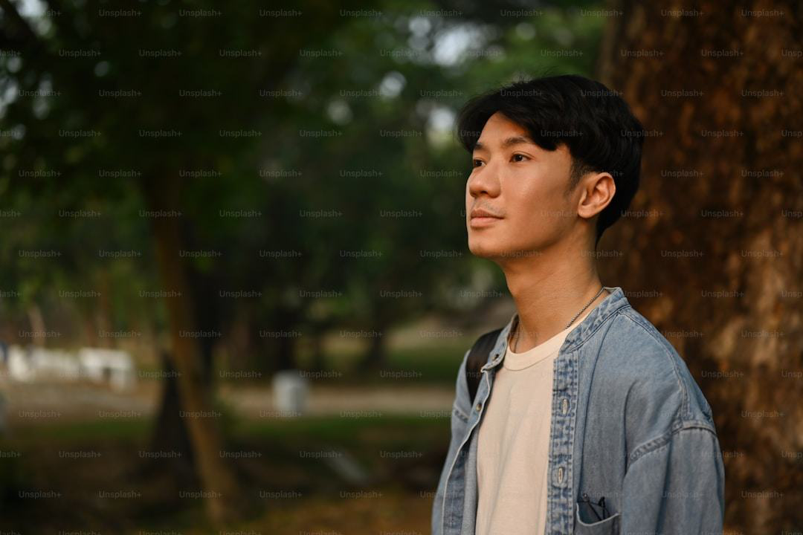

Drive Real Impact Across Africa
Lend your skills to empower local communities and shape sustainable youth-led futures.
Find a role that fits you
From application to your first project
Submit Your Application
Tell us your skills, interests, and availability.
Fill Background Check
A quick screening helps keep our community safe.
Receive Role Acceptance
We match you with the team that needs you most.
Start Your First Project
Get onboarded and make an impact from day one.
1-Year School Leaver Fellowship
Not just ready for a job—ready to lead. The AYM Youth Fellowship is a one-year immersive placement that bridges the gap between school and a meaningful career.
What our volunteers say
"Volunteering with AYM gave me real responsibility and a global network I never expected."
Amara K., Digital Marketing Volunteer
"I came to help build a website; I left having helped build a movement."
David O., Web Designer
Frequently asked questions
How do I apply?
Complete the short application form and our team will guide you through the steps.
Do I need experience?
Roles range from entry-level to specialist. We match your skills with a need.
How much time is required?
It's flexible—from a few hours a week to full-time fellowship placements.
Can I volunteer remotely?
Yes. Many of our roles are fully remote, joining a global network of volunteers.
What happens after I apply?
Application → background check → role acceptance → start your first project.
Still have questions?
Can't find the answer you're looking for? Please chat to our friendly team.